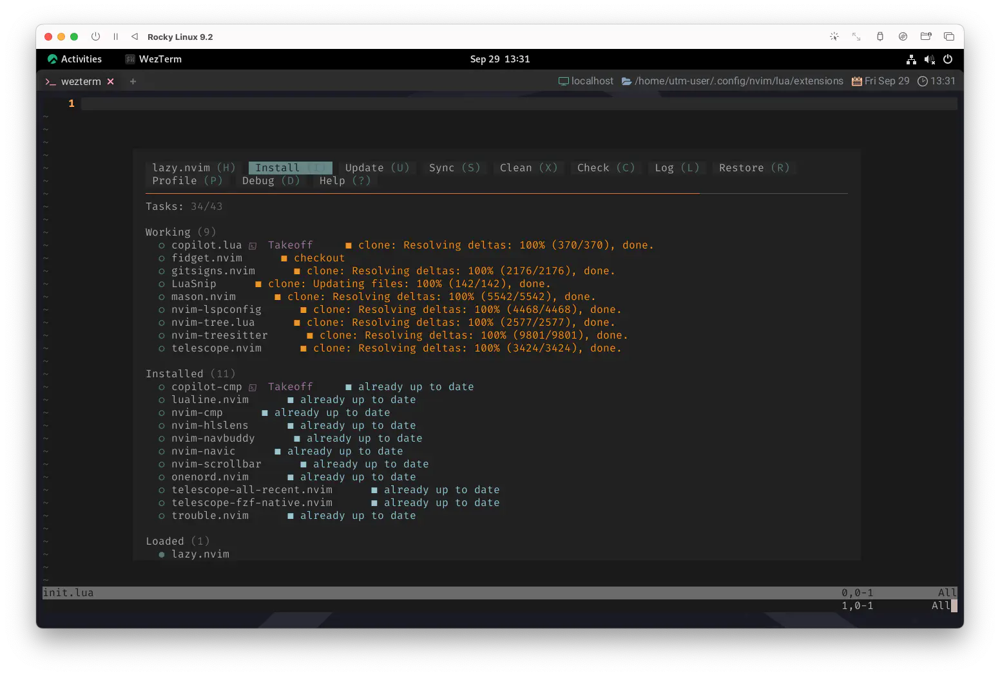
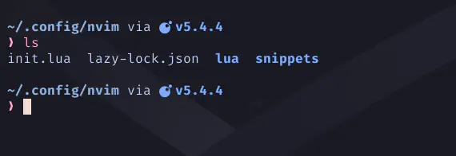

💝 Migration from packer.nvim to 💤 lazy.nvim
Won't you come out tonight?
今夜、一緒に行かない？
今夜はハーベストムーン🌕 です。
月にお願いしましょう😊
「なんでも良いからなんか良い感じに実れぇ〜❗❗」
...と、いうわけでlazy.nvimを本格的にセットアップします😆
📦 Migration Guide
lazy.nvimには、packer.nvimからの移行ガイドがちゃんと用意されています。
packer.nvim
- setup ➡️ init
- requires ➡️ dependencies
- as ➡️ name
- opt ➡️ lazy
- run ➡️ build
- lock ➡️ pin
- disable=true ➡️ enabled = false
- tag='' ➡️ version=""
- after ℹ️ not needed for most use-cases. Use dependencies otherwise.
- wants ℹ️ not needed for most use-cases. Use dependencies otherwise.
- config don't support string type, use fun(LazyPlugin) instead.
- module is auto-loaded. No need to specify
- keys spec is different
- rtp can be accomplished with:
With packer wants, requires and after can be used to manage dependencies.
With lazy, this isn't needed for most of the Lua dependencies.
They can be installed just like normal plugins (even with lazy=true) and will be loaded when other plugins need them.
packer wants では、require と after を使って依存関係を管理できます。
lazyを使えば、Luaの依存関係のほとんどは必要ありません。
これらは通常のプラグインと同じように（lazy=trueでも）インストールすることができ、
他のプラグインがそれらを必要とするときにロードされます。
The dependencies key can be used to group those required plugins with the one that requires them.
The plugins which are added as dependencies will always be lazy-loaded and loaded when the plugin is loaded.
dependenciesキーは、それらのプラグインを必要とするプラグインをグループ化するために使用できます。
dependenciesとして追加されたプラグインは常に遅延ロードされ、プラグインがロードされた時にロードされます。
あら不思議😯
これに従っていくだけでチャチャっと片付いていきます❗
When the time is right
Oh, will you fight that feeling in your heart?
その時が来たら
ああ、君はハートの中のその気持ちと戦うことができる？
🔸 setup ➡️ init
これまでのpackerの設定に見慣れていると、
いきなりちょっと捻くれたことしてるように見えるかもしれないんですが、わたしはこんな書き方にしてます。
新しくpluginsという local 変数を置きます。中身はまだからっぽでへーきです😉
この節で示すコードは全部ここに入れていきます😌
local plugins = {
-- ...
}
んで、ここは前回の 17.1 lazy.nvim - Configuration で書いたコードですね。
local opts = {
-- ...
}
それから、17.1 lazy.nvim - Installation のコードがあって...。
local lazypath = vim.fn.stdpath('data') .. '/lazy/lazy.nvim'
if not vim.loop.fs_stat(lazypath) then
vim.fn.system({
'git',
'clone',
'--filter=blob:none',
'https://github.com/folke/lazy.nvim.git',
'--branch=stable',
lazypath,
})
end
vim.opt.rtp:prepend(lazypath)
require("lazy").setup()
そしたら、一番下にあるsetupを書き換えます。
- require("lazy").setup()
+ require('lazy').setup(plugins, opts)
🥁 Evacuate the packer.nvim
ここまでで問題が無いようであれば、退避しておいたpacker.luaからプラグインのリストを
local 変数pluginsの中に「どかっ❗」と持ってきましょう。
いよいよお引越しっぽくなってきました😆
🔹 use ➡️ (empty)
基本的には、先頭にあったuse {を{に、}を},にするだけで全体の8割ぐらいは片付くでしょう。
- use {
+ {
'nvim-treesitter/nvim-treesitter',
config = function() require 'extensions.nvim-treesitter' end,
- }
+ },
大雑把ではあるものの、以下の置換構文を用いると楽です。
:%s/use {/{
Visual Modeで plugins の中を範囲選択してから...
:s/}/},
'<,'>とかいう呪文は:を入力すれば勝手に詠唱されているはずです❗
で、そうすると上にもある通り、},,っていう変なところができちゃうので...
:%s/},,/},
とか、すれば良いはず❗...と思ったんだけど、 わたしが実際にこれでやってみたらこんなとこもありました。
お手数ですが直してください...。
- config = function() require('telescope-all-recent').setup {}, end,
+ config = function() require('telescope-all-recent').setup {} end,
...もしかしたら一手で綺麗に置換できる方法もあるかもしれないんだけどね😅
configプロパティしか使っていないプラグインは、もうこれだけでオッケー❗
🔹 requires ➡️ dependencies
これも簡単ですね。頭を使わなくても置換だけで終わります😆
{
'williamboman/mason.nvim',
config = function() require 'extensions.mason' end,
- requires = {
+ dependencies = {
'williamboman/mason-lspconfig.nvim', 'neovim/nvim-lspconfig', 'hrsh7th/cmp-nvim-lsp',
}
}
🔹 run ➡️ build
置換❗以下略❗
{
'nvim-telescope/telescope-fzf-native.nvim',
- run = 'make'
+ build = 'make'
},
🔹 tag='' ➡️ version=""
これも同じ❗
{
'j-hui/fidget.nvim',
- tag = 'legacy',
+ version = 'legacy',
config = function() require 'extensions.fidget' end,
dependencies = 'neovim/nvim-lspconfig',
},
🔹 after ℹ️ not needed
not needed for most use-cases. Use dependencies otherwise.
ほとんどのユースケースでは必要ありません。 そうでない場合は dependencies を使用してください。
もしかしたら必要ないかもしれませんが、
telescope-all-recent.nvimにはこれに関して但し書きがあったので、
dependenciesに入れた上でafterを消しておくのが良い...かも❓
{
'prochri/telescope-all-recent.nvim',
config = function() require('telescope-all-recent').setup {} end,
- after = 'telescope.nvim',
dependencies = {
+ 'nvim-telescope/telescope.nvim',
'kkharji/sqlite.lua',
},
}
それと、こっちはもっと聡明な書き方があるのかもしれませんが...。
+ {
+ 'zbirenbaum/copilot.lua',
+ cmd = 'Takeoff',
+ config = function() require 'extensions.copilot' end,
+ },
{
'zbirenbaum/copilot-cmp',
- after = { 'copilot.lua' }
+ cmd = 'Takeoff',
config = function() require('copilot_cmp').setup() end,
},
こうしておけばafterを使わなくてもTakeoffコマンドを契機に両方読み込まれます...よね❓
🪭 Remove Packer Command
PackerLoadコマンドはpacker.nvimの機能なのでもう使えなくなっちゃいましたが、
前項の変更をしておけば、これは消すだけで大丈夫です😉
vim.api.nvim_create_user_command('Takeoff', function()
- vim.cmd.PackerLoad 'copilot.lua'
vim.notify 'Cleared for Takeoff!'
end, {})
🥾 Remove the Hierarchy
packerでは通用していた「多層構造になっている書き方」は通用しないみたいなので、同列に並べておきましょう。
{
'hrsh7th/nvim-cmp',
config = function() require 'extensions.nvim-cmp' end,
requires = {
'hrsh7th/cmp-nvim-lsp', 'onsails/lspkind-nvim',
'hrsh7th/cmp-cmdline', 'hrsh7th/cmp-path', 'hrsh7th/cmp-buffer',
- {
- 'L3MON4D3/LuaSnip',
- run = 'make install_jsregexp',
- config = function() require 'extensions.luasnip' end,
- requires = {
- 'saadparwaiz1/cmp_luasnip',
- {'rafamadriz/friendly-snippets', opt = true },
- }
- },
- },
- {
- 'zbirenbaum/copilot-cmp',
- after = { 'copilot.lua' },
- config = function() require('copilot_cmp').setup() end,
- }
},
+ {
+ 'L3MON4D3/LuaSnip',
+ build = 'make install_jsregexp',
+ config = function() require 'extensions.luasnip' end,
+ dependencies = {
+ 'saadparwaiz1/cmp_luasnip', 'rafamadriz/friendly-snippets',
+ }
+ },
+ {
+ 'zbirenbaum/copilot-cmp',
+ after = { 'copilot.lua' },
+ config = function() require('copilot_cmp').setup() end,
+ },
...というか、これはpackerが器用すぎますよね〜。今さらなんですけど😅
🧙🏽♂️ Friendly Snippets
あと、friendly-snippets.nvimを管理下に置いている場合は、当然pathも変わります。
追っかけましょう。
require('luasnip.loaders.from_vscode').lazy_load {
paths = {
- vim.fn.stdpath 'data' .. '/site/pack/packer/start/friendly-snippets',
+ vim.fn.stdpath 'data' .. '/lazy/friendly-snippets',
'./snippets',
},
}
🌈 ColorScheme
Colorscheme plugins can be configured with lazy=true.
The plugin will automagically load when doing colorscheme foobar.
Colorscheme プラグインはlazy=trueで設定できます。
プラグインはcolorscheme foobarを実行するときに自動的にロードされます。
NOTE: since start plugins can possibly change existing highlight groups, it's important to make sure that your main colorscheme is loaded first. To ensure this you can use the
priority=1000field. (see the examples)プラグインを起動すると、既存のハイライトグループが変更される可能性があります、 メインのcolorschemeが最初にロードされるようにすることが重要です。 これを確実にするには、
priority=1000フィールドを使用します。(例を参照してください)
これももう仰せの通りに❗
{
'rmehri01/onenord.nvim',
lazy = true,
priority = 1000,
config = function() require 'extensions.onenord' end,
},
🚀 Usage
ここまでの間に、もうlazyが起動時に自発的にインストールを始めてくれていたかもしれないんですが、
ここまでくれば、全てのプラグインが元通りに動くようになったはずです❗

Plugins are managed with the ':Lazy' command. Open the help with '<?>' to see all the key mappings.
プラグインは':Lazy'コマンドで管理します。help を'<?>'で開くと、すべてのキーマッピングを見ることができます。
You can press <CR> on a plugin to show its details.
Most properties can be hovered with <K> to open links, help files, readmes, git commits and git issues.
プラグイン上で <CR> を押すとその詳細が表示されます。
ほとんどのプロパティは<K>でカーソルを合わせるとリンク、ヘルプファイル、readme、git commits、git issues を開くことができます。
Lazy can automatically check for updates in the background. This feature can be enabled with config.checker.enabled = true.
例えば、わたしはpacker.nvimで:PackerSyncを多用していたんですが、lazy.nvimの場合は
:Lazy sync
...ってして、同じ感じで使えてます😊
🛀🏽 statusline
これもなんか、組み込んでおくと楽しいかも😆
lazy.nvim provides a statusline component that you can use to show the number of pending updates.
Make sure to enable config.checker.enabled = true to make this work.
lazy.nvim は、保留中の更新の数を表示するために使用できるstatuslineコンポーネントを提供します。
config.checker.enabled=trueを有効にしてください。
で、lualine.luaに組み込みましょう。
もちろん、statuslineでもtablineでも、aだろうとxだろうと好きな場所に入れちゃいましょう❗
require("lualine").setup({
sections = {
lualine_x = {
{
require("lazy.status").updates,
cond = require("lazy.status").has_updates,
color = { fg = "#ff9e64" },
},
},
},
})
わたしはtablineに入れてますが、その場合はこんな感じで出てきます😄

このスクリーンショットではうっかりnvim-notifyを使ってるんですが、 改めて見たらこれ、なんかすっごい綺麗じゃない...❓
うっとりしちゃった😊 次回はこれやろうかな...。
...あれ❓なんか全然おわんねぇな🙄
Don't you know that inside
There's a love you can't hide
君は知らないの？
隠しきれない愛があること
🔒 Lockfile lazy-lock.json
lockfileはgitなどでバージョン管理を行っている場合や、
複数のマシンでプラグインのバージョンを完全に同じにしたい場合に重宝する機能です。
lazy.nvimが更新してくれるので、基本的に、私たちが触る必要はありません😉
After every update, the local lockfile is updated with the installed revisions.
It is recommended to have this file under version control.
updateのたびに、ローカルの lockfile はインストールされたリビジョンで更新されます。
このファイルはバージョン管理下に置くことをお勧めします。
If you use your Neovim config on multiple machines, using the lockfile, you can ensure that the same version of every plugin is installed.
複数のマシンで Neovim の設定を使用する場合、lockfile を使用することで、 すべてのプラグインが同じバージョンでインストールされるようになります。
If you are on another machine, you can do :Lazy restore,
to update all your plugins to the version from the lockfile.
別のマシンにいる場合は、:Lazy restoreを実行することで、
すべてのプラグインを lockfile のバージョンに更新することができます。
これはnvimディレクトリに置かれるみたいですね🤔

⚡ Performance
だいぶ長くなってしまいました...😅
最後にこれだけ試して終わりましょう。
Great care has been taken to make the startup code (lazy.core) as efficient as possible.
During startup, all Lua files used before VimEnter or BufReadPre are byte-compiled and cached,
similar to what impatient.nvim does.
起動コード(lazy.core)を可能な限り効率的にするために細心の注意が払われています。
起動中、VimEnterやBufReadPreの前に使用される全ての Lua ファイルはバイトコンパイルされ、
impatient.nvim と同様にキャッシュされます。
My config for example loads in about 11ms with 93 plugins. I do a lot of lazy-loading though :)
例えば私の設定は約11msで93のプラグインがロードされます。私は遅延ロードを多用していますが😃
lazy.nvim comes with an advanced profiler :Lazy profile to help you improve performance.
The profiling view shows you why and how long it took to load your plugins.
lazy.nvim には高度なプロファイラ:Lazy profileがついていて、パフォーマンスを向上させるのに役立ちます。
プロファイリングビューはプラグインのロードにかかった時間とその理由を表示します。
例えばわたしの設定は33のプラグインを使用して約94msでロードされます。
...。🙂
いえ❗お引越し直後なんて大抵散らかってるもんですから⁉️
なんかもう伸びしろと可能性しかないでしょう🤣
ちゃんとお部屋をチューニングしていけばもっと早くなるはず❗
ってことで、あとは任せたよ❗❗
So why do you fight that feeling in your heart?
それなのに、なぜハートの中でその気持ちと戦うの？
💣 Lazy Dynamite
Oh, lazy dynamite 1
ああ、怠惰なダイナマイト
うん。まじでlazyはダイナマイトでしたね...😵💫
でもまあ、達成感はあるよね❗
乗り越えたんだもの。えらいぞ❗
1: Lazy Dynamite(by Paul McCartney and Wings) The Beatles 解散後の Paul McCartney が、妻 Linda や Denny Laine らとともに結成したバンド、Wings の2作目のアルバムは Hold Me Tight、Lazy Dynamite、Hands of Love、Power Cut の11分のメドレーで終わる。 The Beatles が Abbey Road のB面でとった、未完成の短い楽曲をつなげてメドレー形式にする手法を McCartney は1970年代以降も好んで使った。 Wikipediaより